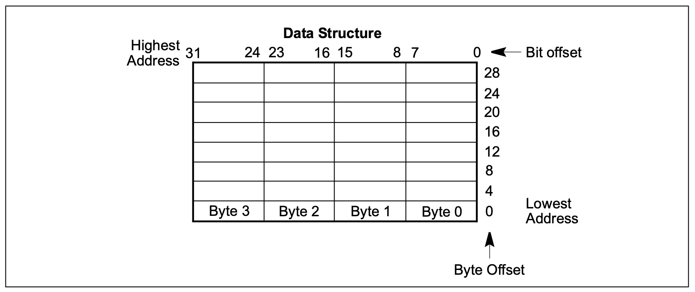

操作系统作为现代计算机软件的基石，相信对于每一个软件开发人员来说，无一不想一探究竟，并且在开源的大趋势下，我们能够轻而易举的获取到世界上各种优秀的操作系统源码，比如Linux。但是对于刚接触内核源代码的开发人员来说，操作系统庞大晦涩且难以理解，因此很多初学者总是刚开始就被劝退，笔者认为造成这种现象的原因有多个方面，其中很重要的一点是对操作系统运行的硬件一无所知或仅了解一星半点。我们知道，操作系统是管理计算机硬件及软件的计算机程序，既然要管理硬件，那自然少不了和硬件打交道，如果我们对操作系统下面的硬件平台一无所知，那学习操作系统自然是相当吃力。而市面上又缺少x86平台的权威资料，流行的一些教材大多也都是浅尝辄止，而Intel官方出版的三卷手册可以说是最全面最权威的x86平台资料了，由于没有中文版，所以很大程度上限制了国内的初学者。因此笔者准备从零开始学习手册，并且同步记录学习心得和进度，同时也希望能够帮助到其他感兴趣的小伙伴。笔者会根据手册的顺序来阅读，每读完一个章节，就会写一篇博客来记录该章节所学，由于笔者也是第一次学习，难免有理解偏差的地方，因此如果后面发现有理解偏差的内容，会及时进行改正。
符号惯例(NOTATIONAL CONVENTIONS)
本章节主要对手册所使用的符号惯例进行介绍，从而方便后续的学习和理解
位序和字节序(Bit and Byte Order)
在本手册的内存数据结构图中：
- 较小的地址位于图的底部，内存地址从下往上递增
- Bit位是从右往左递增编号的，某Bit位的数代表的值是2的编号次幂
- Intel 64和IA-32处理器采用小端表示法，即高位字节在高地址，低位字节在低地址
如图所示

保留位与软件兼容性(Reserved Bits and Software Compatibility)
在x86中，在很多寄存器和内存布局描述中，有一些Bit位被描述为保留位，当有位被标记为保留时，说明这些位是为了与未来的处理器兼容而设计的，因此在开发软件时，要假设这些保留位将来会被用到，保留位的行为应该是未定义的，不可预测的，软件在处理保留位时应该遵守一下原则
- 在测试存在保留位的寄存器时，不要依赖任何保留位的值，相反的，应该在测试前将这些保留位屏蔽
- 不要将信息存放在保留位中
- 在加载寄存器时，需要按照文档说明为保留位加载指定值，或者用上一次从该寄存器读出来的保留位的值重新加载。
也就是说，在开发系统程序时，不要对保留位有任何依赖，因为这些保留位在未来可能会被用到，如果程序依赖的保留位在未来被使用到，那么就会造成程序的不兼容或程序出现不可预测的行为。
指令操作数(Instruction Operands)
当用符号来表示指令时, 使用的是x86汇编语言的一个子集，在这个子集中，一个指令有这样的格式
1 | label: 助记符 参数1, 参数2, 参数3 |
- 标签是标识符，后面紧跟一个”:”
- 助记符是与某一类操作码具有相同功能的保留字(如add)
- 参数是可选的，根据指令功能的不同可能会有0-3个不同数量的参数，参数可以是数值和标识符，当参数是标识符时，可以是寄存器名称，也可以是其他地方声明的数据项(类比高级语言中的变量)
对于一个拥有两个参数的运算或逻辑指令，第二个参数的源参数，第一个参数是目的参数
1 | LOADREG: MOV EAX, SUBTOTAL |
如上所示，SUBTOTAL是MOV的源参数，EAX是目的参数，该指令的功能是将SUBTOTAL的值加载到EAX寄存器中
十六进制和二进制(Hexadecimal and Binary Numbers)
在后续章节中，十六进制数会以”H”结尾, 二进制数会以”B”结尾
分段寻址(Segmented Addressing)
处理器是按字节编址的，这就意味着内存是按照字节顺序排列的，处理器不论访问一个还是多个字节，都需要用一个字节地址来定位这个字节的地址或者多个字节的首字节地址，可以被寻址的内存范围叫做寻址空间。
处理器同样支持分段寻址，分段寻址的格式如下:
1 | Segment-register:Byte-address |
通过段地址我们可以定位到一个指定的段，通过段内偏移我们能够找到段内的指定位置，这样也能达到寻址的目的。通过分段的方式，程序可以将具有相同功能的信息放到同一个段，程序代码放到代码段(CS:IP), 程序数据放到数据段(DS, SS…), 程序堆栈放到堆栈段(SS:SP)
异常(Exceptions)
异常时间通常发生在当指令执行错误时。例如一个除零指令。除此之外，也有一些异常在其他特定情况下才会出现，比如断点异常。有些异常会提供一个错误码，错误码反馈了错误的额外信息。比如:
1 | #PF(错误代码) |
该示例是一个缺页异常，这是的错误代码叫错误类型。
但是有时候，异常的错误代码并没有实际意义，比如通用保护异常(#GP(0))，该异常的错误代码为0，并没有实际意义。
小结
该章节内容比较简单，主要是对书中的一些通用惯例做了介绍，方便后面的学习和阅读，我们下节再见~